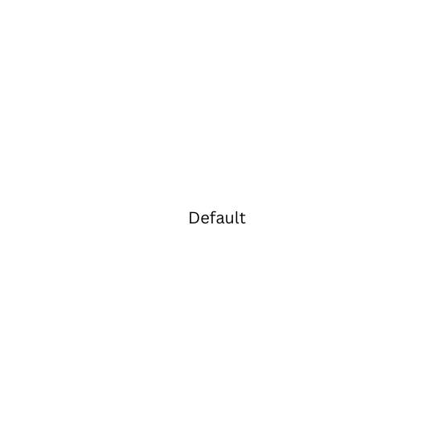

About Me
My Story, My Passion
Biography
Hi, I'm Julie! I'm a fourth-year Computer Science student at UC San Diego. I love learning new things, especially when it comes to tech. Some of my favorite classes so far have been Operating Systems and Computer Networks, and lately, I’ve been diving deeper into OS in my free time.
Outside of school, I love reading sci-fi books, and Ready Player One is one of my all-time favorites. I also love animals—I have a puppy, and she means the world to me!
I really enjoy studying on campus with my friends, and we always end up at Franklin Antonio Hall, our favorite spot. I'm also part of the Competitive Programming Club, where I help out as the Marketing Director. Our club competes in the ICPC and helps students improve problem-solving and algorithmic thinking.
As for my career path, I’m still figuring things out, but for now, I’m just enjoying learning, coding, and spending time with the people I love.
More About My Background
I’m originally from South Korea, and my journey to studying in the U.S. has taken me through a few different places. I spent a few months in New York before moving to California, where I lived in Pleasant Hill in the Bay Area for three years. Eventually, I made my way to San Diego to attend UCSD. I’ve loved all the cities I’ve lived in, but San Diego has been my favorite.
Skills
I'm comfortable working with C++, Java, Python, and C, and I also have experience with HTML, CSS, and JavaScript, though I'm still improving my web development skills. I’ve worked with Pandas, NumPy, and Scikit-Learn, along with YOLOv8 and PyTorch for machine learning tasks. I’ve also learned Docker for containerization and have experience working in Linux and macOS environments. In addition, I have some experience with x86 Assembly and an understanding of operating systems concepts like process management and memory allocation.
Experience
As a Research Assistant for the Avocado Computer Vision Project at UC San Diego (Aug 2024 – Present), I have contributed to improving avocado tree detectionin images using YOLOv8 for precision agriculture applications. My work involves preparing datasets in a YOLO-compatible format, ensuring proper data cleaning and directory structuring. Additionally, I have trained and evaluated YOLOv8 models with different configurations to optimize recall and precision.
Job Preferences
I haven't decided on a specific career path yet, but I see every opportunity as a chance to learn and grow. I'm particularly interested in systems-related roles, such as operating systems and computer networks, but I’m also open to working in backend or frontend development. I currently live in San Diego, so I’d prefer opportunities in the area, but I’m also open to remote positions.
Experiments
Welcome to the Experiments section!
This part of the site is separate from my portfolio and is meant for testing HTML tags that don’t naturally fit elsewhere. The goal is to explore different elements as part of Homework 2. Thanks for stopping by!
If you’re using a Mac, you can press Cmd + Option + I to open the DevTools in your browser and look at the source code of this website!
Here’s my schedule for the next three quarters, displayed using an HTML table.
| Spring 2025 | Fall 2025 | Winter 2026 | ||||||
|---|---|---|---|---|---|---|---|---|
| CSE 125 | Major | 4 | MMW 121 | GE | 4 | MMW 122 | GE | 4 |
| CSE 127 | Major | 4 | CSE 105 | Major | 4 | CSE 160 | Major | 4 |
| CSE 168 | Major | 4 | CSE 140 | Major | 4 | HIEU 147 | GE | 4 |
| HIEU 128 | GE | 4 | ||||||
| Unit Total: | 12 | Unit Total: | 16 | Unit Total: | 12 | |||
Hi, my name is Joohee Julie Hong, and I live in Pleasant Hill San Diego!
Here are my top three favorite foods that always make me happy:
- Avocado
- Chocolate
- Boba
My professor mentioned that these tags are purely presentational, so for semantic purposes, we should use <strong> and <em> instead.
Now, here’s an example of bold and italic text using <b> and <i>!
I plan to include code snippets on my project page as part of my demonstration, but since I’m still working on my website and haven’t decided what to add yet, I’ll use this space to practice the <code> tag. I’m sure it’ll be useful!
#include <iostream>
using namespace std;
int main() {
count << "Hello World!";
return 0;
}
I want to share a pohto of my puppy because she brings me so much joy!
Here’s another photo of my puppy, but this time, I used the <picture> tag to display it in three different sizes based on the screen width.
Here are some key terms I learned in my CSE 120 Operating Systems class:
- Paging
- A way for the OS to manage memory by dividing it into fixed-size pages.
- Condition Variable
- A tool used in multithreading to help threads wait for a condition before continuing.
One key concept I learned in my OS class is multithreading, which allows a program to run multiple tasks at the same time, improving performance and efficiency.
Here’s a simple canvas.
Here's a simple vector graphic I created using SVG.
Extra Credit
According to CanIUse.com, MathML has only recently become widely supported across major browsers. More specifically, this feature has been available on the latest devices and major browser versions since January 2023. Although MathML has been part of the HTML specification for a long time, developers were unable to fully utilize it until recently due to poor browser support.
Project Title
Description of the project goes here.
GitHub Repository